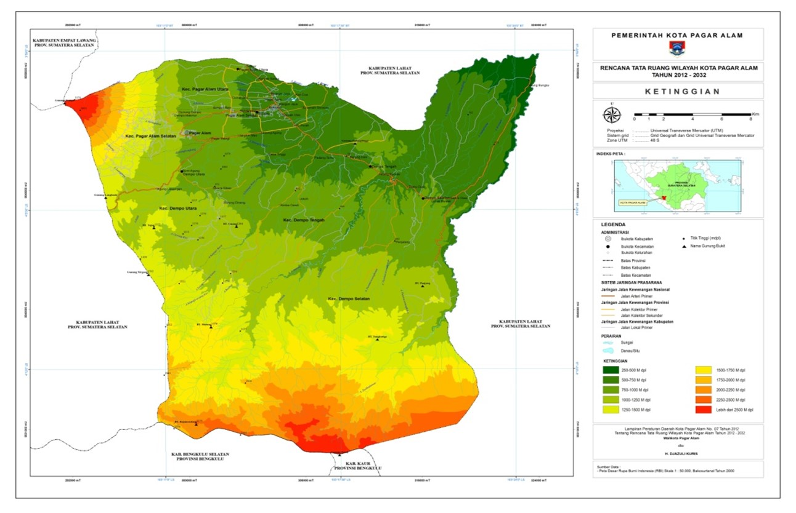

Pada tahun 1920 di Pagar Alam telah terdapat Rumah Sakit yang didirikan oleh Sembilan Maatschapy untuk memberikan Pelayanan Kesehatan bagi karyawan (Contracten) Maatschapy Perkebunan didaerah Pasemah Landen (Tanah Besemah) yang dinamakan “Juliana Hospital Van Negen Onderneming” pada saat itu dikelola dr. H. J Zurbeek. Atas Prakarsa beberapa perkebunan milik Kolonial Belanda yaitu Perkebunan Teh Gunung Dempo, Perkebunan Karet Suka Cinta, Perkebunan Kopi Padang Karet dan Perkebunan Teh Tanjung Keling, maka pada tahun 1931 didirikanlah Fasilitas Kesehatan Rawat Inap oleh Pemerintah Kolonial Belanda bertempat di Balai Istirahat. Pada zaman pendudukan Jepang dari tahun 1942 s/d 1945 sebagian dari zaal Rumah sakit tersebut digunakan untuk asrama bagi taruna pendidikan Militer Jepang Gyo Gun. Seiring dengan kemerdekaan yang di raih oleh bangsa Indonesia maka Balai Istirahat dijadikan Asrama tentara dan pada tahun 1954 didirikanlah Rumah Sakit Umum Pagar Alam yang bertempat di jalan Ade Irma Suryani Nasution (Depan Polsek Pagar Alam Utara) pada tahun 1958 Rumah Sakit Umum Pagar Alam diresmikan oleh Wakil Presiden Pertama R.I Bung Hatta. Dalam kurun waktu yang cukup panjang pelayanan kesehatan di Pagar Alam secara Kronologis adalah sebagai berikut:
Pagar Alam merupakan daerah berbukit dan bergunung, terutama bagian barat laut serta bagian Selatan dan Tenggara. Bagian Tengah hingga Timur Laut merupakan dataran landai. Daerah yang berbukit hingga bergunung dengan ketinggian 1.250 m – 3.195 m dpl. Daerah landai dengan ketinggian antara 441 m – 1.000 m di atas permukaan laut. Rata-rata curah hujan 1.462 mm - 5.199 mm per tahun dengan jumlah bulan basah lebih enam bulan per tahun. Suhu berkisar antara 200 - 280 C dan intensitas cahaya matahari antara 6 -10 jam perhari. Bentuk permukaan tanah di daerah Kota Pagar Alam bervariasi dari dataran sampai bergunung. Daerah yang mempunyai dataran yang cukup luas adalah Kecamatan Pagar Alam Selatan dan Kecamatan Pagar Alam Utara sementara daerah yang mempunyai permukaan yang bergunung adalah Kecamatan Dempo Utara, Kecamatan Dempo Selatan dan Kecamatan Dempo Tengah. Wilayah Kota Pagar Alam mempunyai banyak sungai diantaranya Sungai Lematang, Sungai Selangis Besar, Sungai Selangis Kecil, Sungai Betung, Sungai Suban, Sungai Air Perikan sedangkan Sungai Endikat berbatasan langsung dengan Kecamatan Kota Agung Kabupaten Lahat. Berdasarkan kondisi geografi, Pagar Alam merupakan daerah pegunungan terutama di bagian barat dan selatan. Ketinggian pada berbukit Wilayah Kota Pagar Alam meliputi 5 (Lima) morfologi bergelombang hingga dataran tinggi antara 500-1000 meter.
Pagar Alam merupakan daerah berbukit dan bergunung, terutama bagian barat laut serta bagian Selatan dan Tenggara. Bagian Tengah hingga Timur Laut merupakan dataran landai. Daerah yang berbukit hingga bergunung dengan ketinggian 1.250 m – 3.195 m dpl. Daerah landai dengan ketinggian antara 441 m – 1.000 m di atas permukaan laut. Rata-rata curah hujan 1.462 mm - 5.199 mm per tahun dengan jumlah bulan basah lebih enam bulan per tahun. Suhu berkisar antara 200 - 280 C dan intensitas cahaya matahari antara 6 -10 jam perhari. Bentuk permukaan tanah di daerah Kota Pagar Alam bervariasi dari dataran sampai bergunung. Daerah yang mempunyai dataran yang cukup luas adalah Kecamatan Pagar Alam Selatan dan Kecamatan Pagar Alam Utara sementara daerah yang mempunyai permukaan yang bergunung adalah Kecamatan Dempo Utara, Kecamatan Dempo Selatan dan Kecamatan Dempo Tengah. Wilayah Kota Pagar Alam mempunyai banyak sungai diantaranya Sungai Lematang, Sungai Selangis Besar, Sungai Selangis Kecil, Sungai Betung, Sungai Suban, Sungai Air Perikan sedangkan Sungai Endikat berbatasan langsung dengan Kecamatan Kota Agung Kabupaten Lahat. Berdasarkan kondisi geografi, Pagar Alam merupakan daerah pegunungan terutama di bagian barat dan selatan. Ketinggian pada berbukit Wilayah Kota Pagar Alam meliputi 5 (Lima) morfologi bergelombang hingga dataran tinggi antara 500-1000 meter.
